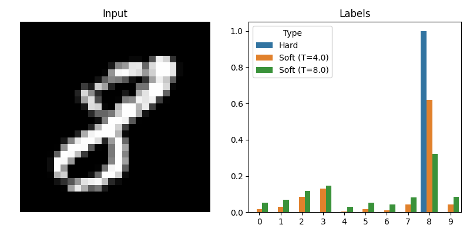

Revisiting and implementing part of the classical paper
deep learning
paper
Published
January 28, 2025
Idea
This classic paper introduced distillation as a way of transferring knowledge from a big network teacher into a small one. The core observation is that we should use the big model’s output distribution as soft labels to train the small model.
Remember that in classification we measure the cross-entropy loss, given the predicted \(\hat y_c\) and correct \(y_c\) class probabilities of an example, with:
\[
L(\hat y,y) = -\sum_c y_c \log \hat y_c
\]
To use soft labels we just set \(y = f_{\text{big}}(x)\).
These soft labels provide a much richer training signal for the smaller model, especially when the larger model distributes its probability mass across multiple classes (i.e. when the labels have high entropy). To force this high entropy, the authors propose increasing the temperature \(T\) of the softmax layer in the larger model to produce the soft labels. The small model trains with this same temperature but then sets it to 1 during testing.

Increasing the temperature of the big model produces softer and more informative labels.
They also had better results by adding a small term to the loss function with the regular hard-labeled cross-entropy. The reasoning is that the model may not have enough capacity to learn the soft targets, so “erring in the direction of the correct answer turns out to be helpful”. If we write the output of a model with temperature \(T\) as \(f(x; T)\), then the complete loss is
\[
L_{\text{distill}}(x,y) = a T^2 \cdot L\left[ f_{\text{small}}(x; T), f_{\text{big}}(x; T) \right] + (1-a) \cdot L \left [ f_{\text{small}}(x; 1), y \right ]
\]
The first term is scaled by \(T^2\) because the magnitudes of the gradients scale as \(T^{-2}\) and we want to control the contribution of each term by changing only \(a\).
Why do the gradient magnitudes scale as \(T^{-2}\)?
Let \(z\) be the logits, then the output \(i\)th entry of the softmax layer with temperature \(T\) is \[
\sigma_T(z)_i = \frac{e^{z_i/T}}{\sum_j e^{z_j/T}} = \hat y_i
\] Plugging into the loss \[
L(\hat y, y) = -\sum_i y_i \log \left(\frac{e^{z_i/T}}{\sum_j e^{z_j/T}} \right) = -\frac{1}{T}\sum_i y_i z_i + (1) \log \left( \sum_j e^{z_j/T} \right)
\] and differentiating w.r.t. \(z_i\) (don’t forget the chain rule), we get \[
\frac{\partial L}{\partial z_i} = -\frac{1}{T} y_i + \frac{1}{ \sum_j e^{z_j/T}} \times e^{z_i/T} (1/T) = \frac{1}{T}(\sigma_T(z)_i - y_i)
\] So, we see that \[
|| \nabla L||_2^2 = \frac{1}{T^2} \sum_i (\sigma_T(z)_i - y_i)^2 \propto L^{-2}
\]
MNIST
We try out distillation on the small-scale MNIST experiment that the authors describe. They use a two-layer linear ReLU architecture with dropout, a jitter image augmentation, and max norm as regularization.
Model definition
class Model(nn.Module):''' Used in MNIST experiments. A two-layer linear ReLU network with dropout and max norm regularization. '''def__init__(self, hidden_size, max_norm =2.0, drop_rate =0.5):super(Model, self).__init__()self.max_norm = max_normself.layers = nn.Sequential( nn.Flatten(), nn.Linear(28*28, hidden_size), nn.ReLU(), nn.Dropout(drop_rate), nn.Linear(hidden_size, hidden_size), nn.ReLU(), nn.Dropout(drop_rate), nn.Linear(hidden_size, 10) )def forward(self, x):# Clip the weights to the maximum allowed normifself.max_norm isnotNone:with torch.no_grad():for layer inself.modules():ifisinstance(layer, nn.Linear): norm = layer.weight.data.norm(2, dim=1, keepdim=True) desired = torch.clamp(norm, max=self.max_norm) layer.weight.data *= (desired / norm)returnself.layers(x)
The hidden dimensions of the big and small networks are 1200 and 800 respectively. To train the networks we use an early stopping validation set and choose \(T = 4.0\) and \(a = 0.5\) (since the authors don’t mention their values).
temperature, a =4.0, 0.5distilled_model, distilled_train_history = train_small_model( train_dataset = train_dataset, val_dataset = val_dataset, seed =42, loss = functools.partial(soft_loss, big_model = big_model, T = temperature, a = a))save_results(distilled_model, distilled_train_history, 'distilled_model')evaluate_model(distilled_model, test_loader)
And get the following test accuracies:
big: 0.9901, small: 0.9833, distilled: 0.9891
Mystical 3
The authors then remove 3 from the transfer set the distilled model is trained on to test its generalization to unseen classes. “So from the perspective of the distilled model, 3 is a mythical digit that it has never seen”. When we evaluate on the test set, which still contains 3s, we see that the distilled model performs much better than a small model trained with hard labels:
Train without 3s in transfer set
# Remove all 3s from the datasettrain_dataset = datasets.MNIST(root = DATA_DIR, train =True, download =True, transform = aug_transform)train_dataset = torch.utils.data.Subset(train_dataset, np.where(train_dataset.targets !=3)[0])# Split training data into train and validation setstrain_size =int(0.9*len(train_dataset))val_size =len(train_dataset) - train_sizetrain_dataset, val_dataset = torch.utils.data.random_split( train_dataset, [train_size, val_size])# Train small without distillationsmall_no_3, small_no_3_history = train_small_model( train_dataset = train_dataset, val_dataset = val_dataset, seed =42, loss = hard_loss, model_size =800)# Train small with distillationdistilled_no_3, distilled_no_3_history = train_small_model( train_dataset = train_dataset, val_dataset = val_dataset, seed =42, loss = functools.partial(soft_loss, big_model = big_model, T =4.0, a =0.5), model_size =800)
Not distilled: 0.8882, distilled: 0.9869
In the paper, the authors take it to the extreme and show that a distilled model trained only on 7 and 8 still achieves impressive performance. They also do experiments on a bigger speech recognition dataset and discuss training experts on a CV dataset with distillation from a generalist model as regularization.
Final thoughts
It was very fun to return to this classic paper. It introduced a simple yet powerful idea that is still widely used today. Like most of these papers (circa 2015), it is very clear and readable. And—as Hinton staple—it is slightly bio-inspired, in this case by larvae.
Some pointers to papers that extended on this idea. Self-distillation makes the teacher (“big”) and student (“small”) models the same size, and in mutual learning two or more networks learn collaboratively. However, the main extensions of this paper build on its main theme: train on a richer signal. You might train the student to imitate the teacher’s intermediate (or last) representations, attention maps, etc.